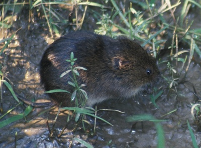
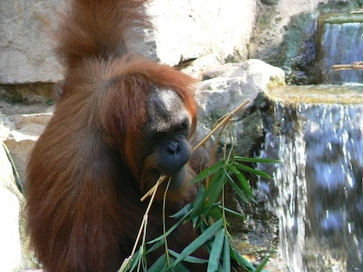
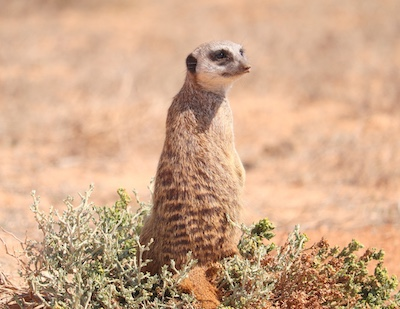
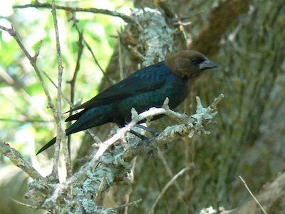
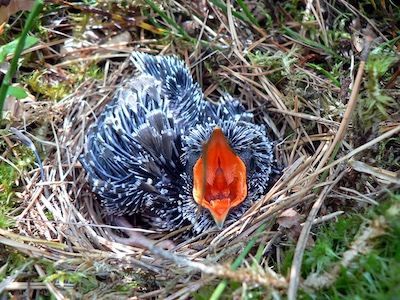

Sad wild animal facts
Let us understand, once for all, that the ethical process of society depends, not on imitating the cosmic process, still less on running away from it, but in combating it.
Thomas Huxley
This post serves to illustrate why I agree with the quote above. Below I list examples of what happens in nature that I think are just horrible and that I wish we could do something about.
The list is not complete and I intend to continuously update it when I encounter more sad facts.
Last updated: July 01, 2024
Mammals
Meadow vole

Scientific name: Microtus pennsylvanicus
One study found that only 12% of meadow voles survive the first month, with most voles likely dying due to predation (Clutton-Brock et al., 1998).
Orangutan

Scientific name: Pongo pygmaeus
Male orangutans frequently force female orangutans to mate with them (Mitani, 1985).
Meerkat

Scientific name: Suricata suricatta
Dominant females commonly kill pups born to subordinates and temporarily expel subordinate females from the group during the latter months of their own pregnancy (Turner et al., 2022).
Bottlenose dolphin
Scientific name: Tursiops truncatus
Bottlenose dolphins have been found to kill harbor porpoises, plausibly to practice their infanticide skills or to maintain their fighting skills (Cotter et al., 2012).
Chimpanzee
Scientific name: Pan troglodytes
Intergroup aggression, including lethal attacks, is a pervasive feature of chimpanzee societies (Wilson & Wrangham, 2003).
Chimpanzee
Scientific name: Pan troglodytes
Both male and female chimpanzees kill infants (Townsend et al., 2007).
Northern short-tailed shrew
Scientific name: Blarina brevicauda
The Northern short-tailed shrew has venomous saliva that it uses to immobilize some of its prey to eat it later (Martin, 1981).
Birds
Brown-headed cowbird

Scientific name: Molothrus ater
Cowbirds lay their eggs in the nests of other birds and display ‘mafia’ like behavior by destroying eggs or nestlings of hosts if they eject their eggs (Hoover & Robinson, 2007).
Common cuckoo

Scientific name: Cuculus canorus
The common cuckoo female lays one egg is the nest of other birds and usually removes and eats one of the host’s eggs. In general, the cuckoo egg hatches before those of the host and the cuckoo chicks start evicting host offspring from the nest (Martín-Gálvez et al., 2005).
Mallard
Scientific name: Anas platyrhynchos
Mallards forcibly mate with females (McKinney & Evarts, 1998).
Kelp gull
Scientific name: Larus dominicanus
In Namibia, kelp gull pluck out the eyes of juvenile Cape fur seals and then later feast on its carcass (Gallagher et al., 2015).
Insects
Forelius pusillus
Scientific name: Forelius pusillus
In the Brazilian ant Forelius pusillus, the nest entrance is closed at sunset. One to eight workers finish the job from the outside and, in doing so, sacrifice their lives (Tofilski et al., 2008).
Arachnids
Desert spider
Scientific name: Stegodyphus lineatus
The offspring of the desert spider eat their own mother (Salomon et al., 2015).
Fish
Sand tiger shark
Scientific name: Carcharias taurus
During their pregnancy, the most developed embryo will feed on its siblings (Gilmore et al., 1983).